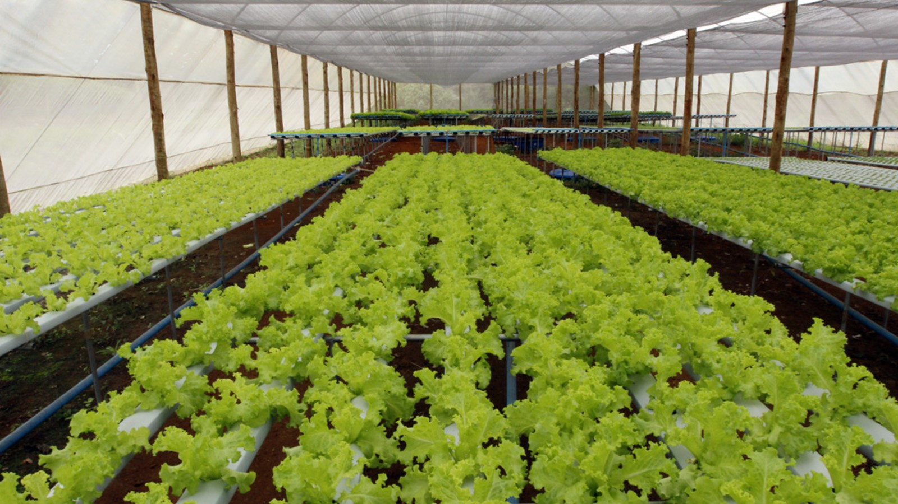
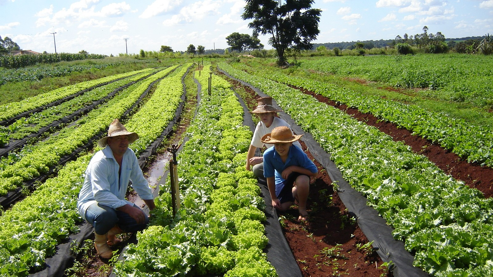
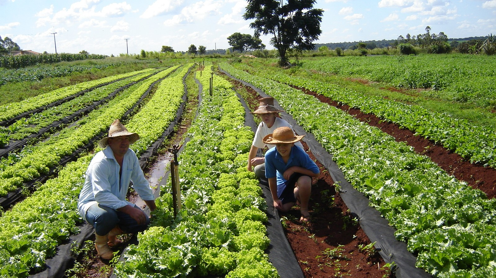

ㅤㅤㅤㅤㅤㅤㅤㅤㅤㅤ
Agricultura Familiar
Toledo é, há nove anos, o maior produtor de alimentos do Paraná. No entanto, é crucial reconhecer a importância contínua do apoio aos produtores agrícolas para garantir o crescimento sustentável da produção de alimentos. Isso inclui iniciativas que visam aumentar a produtividade, diversificar as culturas cultivadas e promover práticas agrícolas mais ecológicas.
A Política de Segurança Alimentar e Nutricional é a grande beneficiária deste projeto. Ao apoiar a produção local, garante-se cadeias curtas de produção que, em geral, resultam em alimentos de maior qualidade. Além disso, a disponibilidade de alimentos e a variedade da produção fazem com que mais pessoas possam ter o Direito Humano à Alimentação Adequada garantido. Para isso, buscamos intermediar a Assistência Técnica e o Acesso a Recursos.

Programa de Aquisição de Alimentos (PAA) Municipal
Programa de Aquisição de Alimentos Municipal tem como objetivo incentivar a agricultura familiar e ampliar os serviços de segurança alimentar e nutricional principalmente para as pessoas em vulnerabilidade social.
Em 2024 o PAA Municipal conta com 248 produtores ativos que em seu âmbito de ações produzem alimentos de qualidade para atender aos oito Restaurantes Populares, seis Entidades Assistenciais (totalizando 1.151 pessoas) e também à 36 Grupos de Idosos (aproximadamente 3.000 idosos).
Galeria
 
